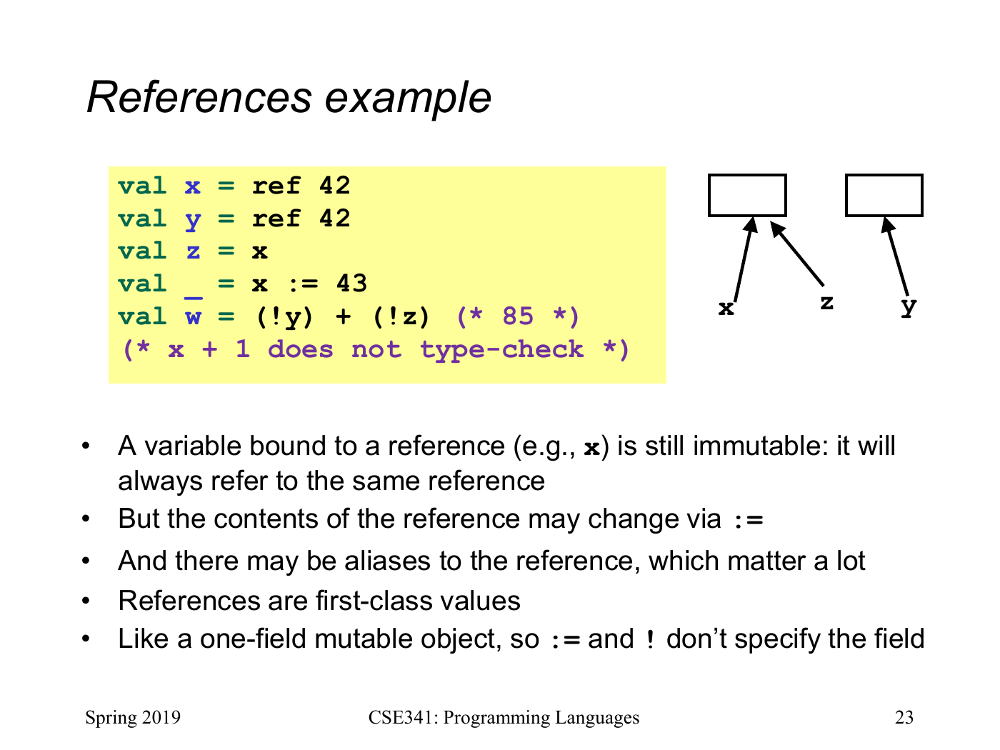

如果所有人都应该看到同一份更新，该怎样表达
前面强调不可变绑定：后来写同名 val，不会把旧闭包保存的值改掉。但按键次数、当前回调列表这类状态，本来就需要更新，而且持有它的人都应该看到更新。SML 把这种能力集中到引用（reference）：一个明确标出的、内容可以替换的位置。
原课用两个位置和一个别名说明区别。这里 ref 42 创建位置，!x 读取其内容，x := 43 把内容改成 43。
val x = ref 42;
val y = ref 42;
val z = x;
val _ = x := 43;
val total = (!y) + (!z);第一次 ref 42 创建位置 A，第二次创建独立的位置 B；数值相同并不表示位置相同。val z=x 没有创建第三个位置，而是让 z 和 x 指向 A，因此更新 x 后，!z=43，但 !y=42，total=85。
x、y、z 的类型都是 int ref，不是 int。不能直接写 x+1；要先读成整数，再写 !x+1。SML 的 ! 在这里不是布尔取反，取反仍是 not。

x、z 共享一个可变单元，y 指向另一个单元。赋值更新的是单元内容；名字与引用之间的绑定没有改变。本页保留原课完整画面，w 的结果为 85。
Dan Grossman · University of Washington · CSE341 Spring 2019 · Lecture 9 · PDF 第23页 · 点击图片看大图
改变的是位置的内容，不是名字的绑定
x 仍然指向最初的位置 A。:= 修改的是 A 里面放的整数，并没有把 x 重新绑定到其他地方。两个名字指向同一位置叫别名；一旦允许修改，就必须关心别名能否看到同一份变化。
三个基本操作可以这样读：ref e 先算 e 再创建新位置；r := e 找到引用位置并算出新值，再替换内容；!r 读取当前内容。赋值表达式返回 ()，表示动作完成，没有另一份有用的结果，因此常写 val _ = ... 表示不为这个返回值取名。
位置的内容类型仍然固定。int ref 可以从 42 变成 43，不能变成字符串。
(* 预期：类型错误。x 是 int ref，其内容不能改成 string。 *)
val _ = x := "changed";引用本身也是一等值，可以放进元组、传给函数或由函数返回。若引用里面放元组，更新引用时可以换成另一个元组；可变的仍然是引用位置，不是原来的元组突然获得了可写字段。
闭包捕获普通整数，和捕获引用，差在哪里
下面把“固定阈值”和“大家都能更新的阈值”放在一起。读代码时只需问：闭包保存的值究竟是整数，还是一个指向可变位置的引用？
val fixed_limit = 10;
fun above_fixed n = n > fixed_limit;
val shared_limit = ref 10;
fun above_shared n = n > (!shared_limit);
val before = above_shared 15;
val _ = shared_limit := 20;
val fixed_after = above_fixed 15;
val shared_after = above_shared 15;before=true；更新后，fixed_after=true，shared_after=false。above_fixed 保存的配置是整数 10。above_shared 保存的是同一个引用，后来执行 !shared_limit 时，读取的内容已是 20。
这没有推翻词法作用域。闭包仍使用定义时绑定到的那个 shared_limit，只是那个值指向的位置允许更新。不要把闭包一概理解成“冻结整个世界的一张快照”；它保留哪些值，必须看具体绑定，而这些值可能就是可变位置。
你可以把它与 Kotlin 捕获一个可变局部变量时共享的存储位置作概念对照。两边都要区分“固定的普通值”与“以后还会被读取或更新的位置”，但具体语言的赋值语法与捕获规则仍应分别看待。
为什么仍把不可变作为默认选择
本课程没有转而要求每个递归都加上可变计数器。引用适合表达“这份共享状态本来就应改变”的问题，例如下一篇的注册表；纯列表处理通常继续返回新值，推理更局部，也不用追踪其他别名是否插手。
因此选择不是“可变永远错误”或“现实程序都得可变”。先说清模型里到底需要固定值还是共享更新，再用明确的数据形式表达它。原课作业仍限制使用 mutation，是为了练习无需共享更新的程序结构，并不表示 SML 没有这种能力。
对应原课与回看线索
对应 V17 Mutable References。开头保留原视频 42、42、43、85 的别名例子；固定/共享阈值为延伸例子。参考 Unit 3 阅读笔记 与 Lecture 9 幻灯片。